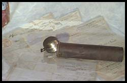
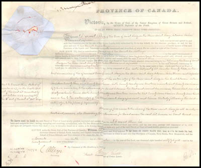

Home • David Pim Collection • David & Margaret Pim • The Pim House • The Pim Children
David Pim & The Ermatinger Stone House
David Pim Collection
Documents that belonged to David Pim, one of Sault Ste. Marie's earliest settlers, were donated to the Sault Ste. Marie Public Library's Archives in 2001 by one of his descendants. The documents, many written on vellum with the original seals were in excellent condition. They had been stored inside a metal cylinder that had kept them safe for over 100 years. The documents included David and Margaret Pim's Marriage certificate, dated 1852, the first land transaction in Sault Ste Marie, dated 1857, the sale of the Ermatinger Old Stone House, and other documents. These items are available at the Information Desk at the Sault Ste. Marie Public Library and can be requested from the archives for study.
 |
 |
Metal Cylinder and Documents Collection of the Sault Ste. Marie Public Library Archives |
Appointment as Revenue Inspector |